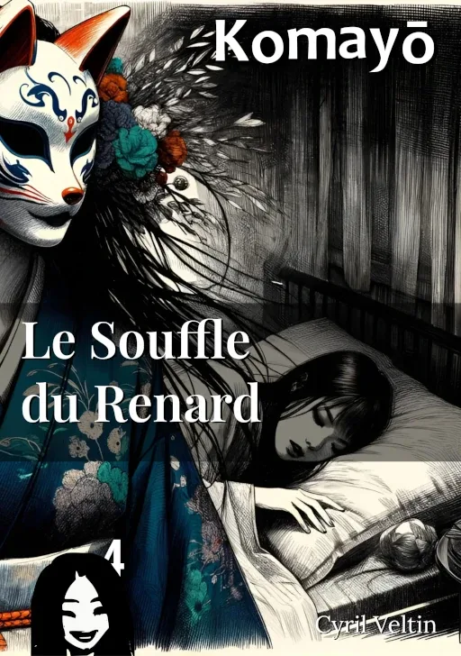

Le Souffle du Renard
Dans le silence de la nuit, les rêves oubliés murmurent les échos de coeurs solitaires.

ISBN : 978-2-9589581-3-8
Préambule
Dans le Japon féodal, où les conventions sociales règnent en maîtres absolus, la solitude peut devenir une prison plus oppressante que les murs les plus épais. Pour Yuki, jeune femme de la noblesse, les journées s'écoulent avec la régularité d'un sablier dans sa demeure luxueuse de Kyōto, chaque grain représentant un moment d'isolement de plus.
L'arrivée d'un mystérieux jeu de stratégie, cadeau de son mari absent, va bouleverser son existence. Ce qui commence comme un simple passe-temps devient rapidement une obsession dévorante, transformant ses nuits en un théâtre d'ombres où réalité et imagination se confondent.
Lorsque son mari revient enfin, il découvre une femme méconnaissable, prisonnière d'une spirale dont elle seule semble connaître les règles. Sa quête pour la sauver le mènera au cœur d'une énigme où se mêlent traditions ancestrales et désirs inavoués, révélant que certains jeux, une fois commencés, ne peuvent plus être arrêtés.
Une histoire captivante sur la fine ligne qui sépare la passion de l'obsession, et sur les dangers qui nous guettent lorsque nous cherchons à échapper à notre solitude à tout prix.
Extraits choisis
La Détérioration de Yuki
La demeure, autrefois un symbole d'ordre et d'élégance, était méconnaissable. Les signes de négligence étaient partout : des tasses de thé vides et des éventails éparpillés jonchaient les tables, tandis que des vêtements délicats étaient laissés à l'abandon. La maison, autrefois pleine de vie et de rires, portait maintenant les stigmates d'un profond désordre.
Déterminé à trouver une solution, il entreprit de chercher de l'aide. Il pensa à un moine exorciste renommé pour sa sagesse et sa connaissance des maux de l'âme. Peut-être, espérait-il, cet homme sage pourrait-il libérer Yuki de l'emprise de cette étrange malédiction qui semblait liée au jeu de ōgi.
Le Rituel de Purification au Temple
Le mari marchait d'un pas rapide vers le temple, tenant fermement l'ōgiban sous son bras. Il sentait une angoisse grandissante l'envahir, comme si quelque chose le poursuivait dans l'obscurité. Il se retournait plusieurs fois, mais ne voyait rien d'autre que les arbres et la rivière qui scintillent sous la lune. Son esprit était tourmenté par des pensées de sa femme, plongée dans une obsession sombre à cause de ce jeu ancien.
Nous allons purifier cela avec le feu sacré,déclara le prêtre d'une voix douce mais ferme, guidant le mari vers un grand bûcher où des offrandes et des prières étaient déjà en train de se consumer. Les flammes dansaient vers le ciel nocturne, comme si elles liaient le monde terrestre à celui des esprits.